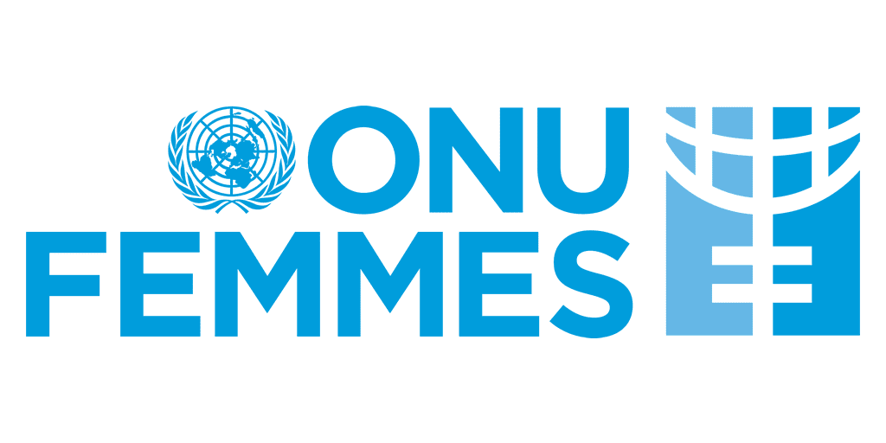
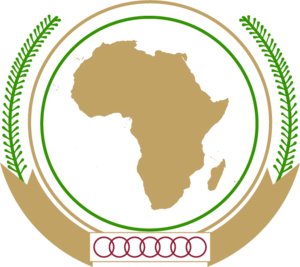
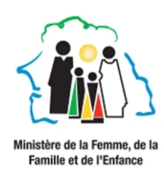

Le chapitre sénégalais de l’African Women Leaders Network (AWLN) est un réseau de femmes leaders engagées pour la promotion du leadership féminin, la paix et l’autonomisation des femmes et des filles.
Notre mission est de renforcer la participation des femmes dans la gouvernance, de soutenir les initiatives de paix et de promouvoir l’égalité des chances dans tous les secteurs de la société.
AWLN Sénégal s’inscrit dans une dynamique panafricaine, en lien avec les autres chapitres du continent, et collabore avec des partenaires nationaux et internationaux pour un impact durable.
L’African Women Leaders Network (AWLN) a été lancé en 2017 par l’Union Africaine et ONU Femmes pour renforcer la voix et l’action des femmes leaders à travers le continent. Le chapitre sénégalais s’inscrit dans cette dynamique et œuvre pour un Sénégal plus inclusif.
Encourager la participation des femmes dans la prise de décision.
Promouvoir la cohésion sociale et la résolution pacifique des conflits.
Renforcer les capacités économiques et sociales des femmes et des filles.
Nous collaborons avec ONU Femmes, l’Union Africaine, le Ministère de la Femme et plusieurs ONG locales.


